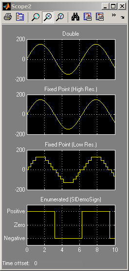
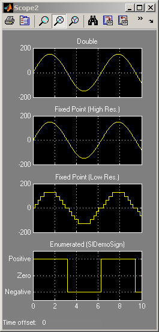

Data Typing in Simulink®
This demonstration shows how to use data types in Simulink. The model used in this demo converts a double-precision sine wave having an amplitude of 150 to various data types and displays the converted signals on two scopes.
The first scope shows the original sine wave and the result of converting this signal to signed and unsigned 8-bit integer data types with saturation enabled. The bottom axes show the boolean results of comparing the signed and unsigned integer values.
The second scope shows the original sine wave and the result of converting this signal to two fixed-point data types: one high-resolution, the other lower resolution. The bottom axes show the result of mapping the sine wave to an enumerated data type that indicates whether the signal is positive, negative or zero.
Similar data type support exists for parameters and states. Simulink also supports other integer and floating-point data types, such as, single, int16, and uint32, and fixed-point types with slope/bias and wordlengths from 1 to 128 bits. You can also define types for bus signals and aliases for existing types.
NOTE: If you do not have a license for Simulink® Fixed Point™ then the fixed-point signals will be replaced by single-precision signals.

 
